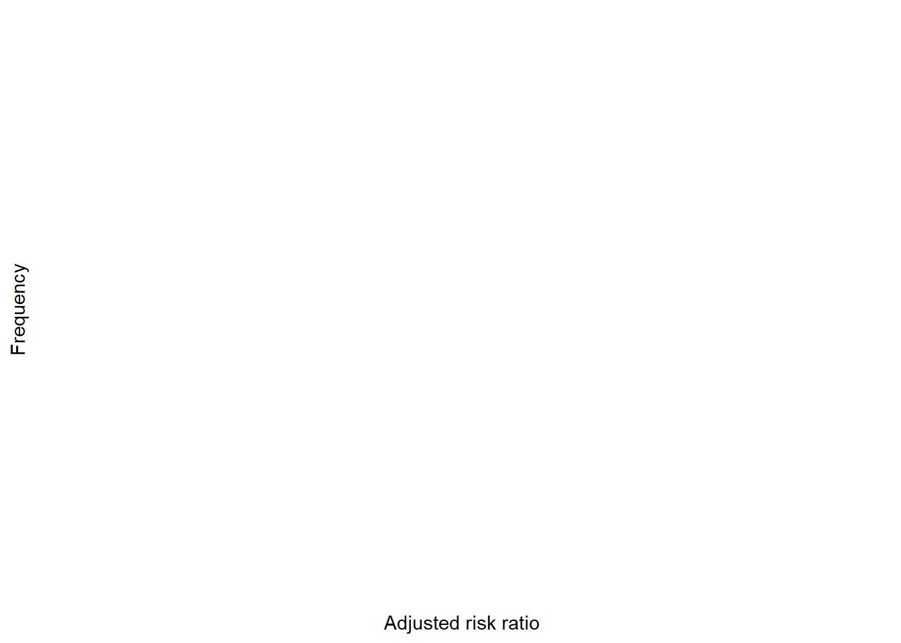

library(dplyr)
library(tidyr)
library(haven)
library(forcats)
library(epiR)
library(janitor)
library(broom)
library(glue)
library(purrr)
library(ggplot2)
library(MatchIt)
library(readr)
data_dir <- file.path("..", "mer_data_stata")
calc_or <- function(tab) {
(tab[1, 1] / tab[1, 2]) / (tab[2, 1] / tab[2, 2])
}
rtriang <- function(n, min, mode, max) {
u <- runif(n)
c <- (mode - min) / (max - min)
ifelse(
u < c,
min + sqrt(u * (max - min) * (mode - min)),
max - sqrt((1 - u) * (max - min) * (max - mode))
)
}9 SME Chapter 8: Confounding and Propensity Scores
Note
This chapter reproduces and expands upon the analyses from the original Methods in Epidemiologic Research (MER) Chapter 13 (Dohoo, Martin, & Stryhn, 2012) using R with data sourced from ../mer_data_stata/. The chapter covers confounding and propensity score methods - essential techniques for addressing confounding in observational studies.
9.1 Replication Notes
- Data dependencies:
../mer_data_stata/crd.dta,mi.dta,vacc_factual.dta,ind_vacc_summ.dta(created in the workflow). - Required R packages:
dplyr,tidyr,haven,forcats,epiR,janitor,broom,glue,purrr,ggplot2,MatchIt,readr. - Setup tips: Install via
install.packages(c("dplyr","tidyr","haven","forcats","epiR","janitor","broom","glue","purrr","ggplot2","MatchIt","readr")). - Execution: Run sequentially; intermediate datasets used later in the chapter (e.g.
mi100.dta) are generated within the notebook.
9.2 Theoretical Background
Understanding Confounding and Propensity Scores
Before we analyze confounding, let’s understand what it is and how to deal with it. Confounding is one of the most important threats to validity in observational studies (Rothman, Huybrechts, & Murray, 2024; Dohoo, Martin, & Stryhn, 2012):
9.2.1 What is Confounding?
Confounding is when a third variable affects both the exposure and the outcome, making it look like the exposure causes the outcome when it really doesn’t (Rothman, Huybrechts, & Murray, 2024; Dohoo, Martin, & Stryhn, 2012).
Classic example: Ice cream sales and drowning deaths are correlated, but ice cream doesn’t cause drowning! The confounder is temperature - hot weather increases both ice cream sales and swimming (which leads to more drowning).
9.2.2 The Confounding Triangle
Confounding requires three things: 1. The confounder is associated with the exposure 2. The confounder is associated with the outcome (in the unexposed) 3. The confounder is not on the causal pathway
Think of it like: A confounder is a “common cause” that makes exposure and outcome look related when they’re not directly related.
9.2.3 Why Confounding is a Problem
Confounding makes us think we found a real effect when we didn’t. Or it makes us miss a real effect. It’s like being fooled by a correlation that isn’t causal.
9.2.4 How to Deal with Confounding
9.2.5 1. Stratification (Mantel-Haenszel)
Stratification means analyzing within groups defined by the confounder. Like: “Does smoking cause lung cancer, separately for men and women?” This removes the effect of gender as a confounder.
Mantel-Haenszel: A method to combine results across strata to get an overall estimate that accounts for the confounder.
9.2.6 2. Regression Adjustment
Regression adjustment means including the confounder in a regression model. Like: “Does smoking cause lung cancer, after accounting for age?” The model estimates the effect of smoking while “holding age constant.”
9.2.7 3. Propensity Scores
Propensity score is the probability of being exposed, given your characteristics. Like: “Given your age, gender, and health status, what’s the probability you’d be in the treatment group?”
Why it’s useful: People with similar propensity scores are similar in their characteristics. So if we compare exposed and unexposed people with the same propensity score, we’re making a fair comparison.
Propensity score matching: Match exposed and unexposed people with similar propensity scores, then compare outcomes. This creates balanced groups.
9.2.8 Understanding Propensity Scores
Think of propensity scores like a “similarity score”: - People with similar scores are similar in their characteristics - Matching on propensity scores is like matching on all characteristics at once - It helps create fair comparisons when randomization isn’t possible
9.2.9 When to Use What
- Stratification: Good for categorical confounders with few categories
- Regression: Good for continuous confounders or many confounders
- Propensity scores: Good when you have many confounders and want to create balanced groups
9.2.10 The Goal
All methods aim to answer: “What would happen if we could compare exposed and unexposed people who are otherwise identical?” This is what we’d get from a randomized trial, but we’re trying to approximate it with observational data.
In simple terms: Confounding is when a third variable makes exposure and outcome look related when they’re not. We deal with it by accounting for the confounder - through stratification, regression, or propensity scores. The goal is to make fair comparisons, like we’d get from a randomized trial. Propensity scores are especially useful when you have many confounders - they create a single “similarity score” that helps match people fairly.
9.3 Setup
What is this section doing?
This section sets up tools for analyzing confounding and using propensity scores. Think of it like preparing to untangle cause and effect:
- Loading libraries: Getting the tools we need
- Helper functions: Creating functions to calculate odds ratios and simulate data
- Data preparation: Getting ready to analyze how confounding affects our results
In simple terms: We’re preparing to answer “is the association we see real, or is it because of something else?” (confounding) and “can we match people to make fair comparisons?” (propensity scores).
9.4 Exercises 13.7 & 13.8: Mantel–Haenszel Examples
What is this section doing?
This section uses the Mantel-Haenszel method to control for confounding. Think of it like comparing groups while accounting for a third factor:
- Stratified analysis: We break the data into groups (strata) based on the confounder (like RSV status or city)
- Mantel-Haenszel: We combine results across strata to get an overall estimate that accounts for the confounder
- Comparing crude vs adjusted: We see how much the association changes when we account for confounding
In simple terms: We’re asking “does the association hold up when we account for other factors?” If the adjusted result is very different from the crude result, confounding was affecting our findings.
crd <- read_dta(file.path(data_dir, "crd.dta")) |>
mutate(
across(c(crd, strep, rsv, city), as.factor)
)
tab_crd <- table(crd$crd, crd$strep)
masso_crd <- epi.2by2(tab_crd, method = "case.control", conf.level = 0.95, outcome = "as.columns")
masso_crd$massocNULLstrata_rsv <- crd |>
group_by(rsv) |>
summarise(
table = list(table(crd, strep)),
mh = list(epi.2by2(table(crd, strep), method = "case.control", outcome = "as.columns"))
)
strata_rsv# A tibble: 2 × 3
rsv table mh
<fct> <list> <list>
1 0 <table [2 × 2]> <epi.2by2>
2 1 <table [2 × 2]> <epi.2by2>strata_city <- crd |>
group_by(city) |>
summarise(
table = list(table(crd, strep)),
mh = list(epi.2by2(table(crd, strep), method = "case.control", outcome = "as.columns"))
)
strata_city# A tibble: 2 × 3
city table mh
<fct> <list> <list>
1 1 <table [2 × 2]> <epi.2by2>
2 2 <table [2 × 2]> <epi.2by2>9.5 Logistic Models (Section 13.6)
What is this section doing?
This section uses logistic regression to control for confounding. Think of it like a more sophisticated way to account for multiple factors at once:
- Simple model: Just looks at the exposure and outcome (like “does strep cause CRD?”)
- Adjusted model: Adds the confounder (like “does strep cause CRD, accounting for RSV?”)
- Comparing models: We see how the association changes when we add the confounder
In simple terms: Logistic regression lets us control for multiple factors simultaneously. If adding RSV changes the strep-CRD association, RSV was confounding the relationship.
logit_simple <- glm(crd ~ strep, data = crd, family = binomial())
logit_adjusted <- glm(crd ~ strep + rsv, data = crd, family = binomial())
bind_rows(
tidy(logit_simple, exponentiate = TRUE, conf.int = TRUE),
tidy(logit_adjusted, exponentiate = TRUE, conf.int = TRUE)
) |>
mutate(model = rep(c("Crude", "Adjusted for RSV"), times = c(nrow(tidy(logit_simple)), nrow(tidy(logit_adjusted)))))# A tibble: 5 × 8
term estimate std.error statistic p.value conf.low conf.high model
<chr> <dbl> <dbl> <dbl> <dbl> <dbl> <dbl> <chr>
1 (Intercept) 0.330 0.211 -5.27 1.36e- 7 0.215 0.492 Crude
2 strep1 1.69 0.232 2.26 2.37e- 2 1.08 2.69 Crude
3 (Intercept) 0.204 0.244 -6.52 7.09e-11 0.124 0.324 Adjusted…
4 strep1 2.00 0.239 2.91 3.64e- 3 1.27 3.25 Adjusted…
5 rsv1 2.24 0.183 4.42 9.89e- 6 1.57 3.22 Adjusted…9.6 Example 13.9: Mantel–Haenszel with Interaction
mi <- read_dta(file.path(data_dir, "mi.dta"))
mi100 <- mi |>
mutate(
d100 = if_else(!is.na(surv_mi), surv_mi <= 100, NA),
d100 = if_else(is.na(surv_mi) & died == 1, NA, d100)
) |>
filter(!(surv_mi < 100 & died == 0))
write_dta(mi100, file.path(data_dir, "mi100.dta"))
mi100 |>
tabyl(prmi, d100) prmi FALSE TRUE NA_
0 1783 345 2
1 641 194 0mh_overall <- epi.2by2(table(mi100$d100, mi100$card), method = "cohort.count", outcome = "as.columns")
mh_by_prmi <- mi100 |>
group_by(prmi) |>
summarise(
table = list(table(d100, card)),
mh = list(epi.2by2(table(d100, card), method = "cohort.count", outcome = "as.columns"))
)
list(overall = mh_overall$massoc, by_stratum = mh_by_prmi)$overall
NULL
$by_stratum
# A tibble: 2 × 3
prmi table mh
<dbl> <list> <list>
1 0 <table [2 × 2]> <epi.2by2>
2 1 <table [2 × 2]> <epi.2by2>9.7 Indirect Standardization (Section 13.7.1)
vacc <- read_dta(file.path(data_dir, "vacc_factual.dta"))
table_134 <- vacc |>
group_by(c, e) |>
summarise(
pop = n(),
cases = sum(d),
.groups = "drop"
) |>
group_by(e) |>
mutate(totcases = sum(cases)) |>
ungroup()
write_dta(table_134, file.path(data_dir, "ind_vacc_summ.dta"))
std_pop <- table_134 |>
filter(e == 0) |>
transmute(
c,
std_pop = pop,
std_cases = cases,
std_rate = cases / pop
)
direct_rates <- table_134 |>
mutate(rate = cases / pop) |>
group_by(e) |>
summarise(crude_rate = sum(cases) / sum(pop), .groups = "drop")
mh_standardized <- table_134 |>
mutate(rate = cases / pop) |>
left_join(std_pop |> select(c, std_pop), by = "c") |>
group_by(e) |>
summarise(
standardized_rate = sum(rate * std_pop) / sum(std_pop),
.groups = "drop"
)
list(
table_13_4 = table_134,
direct_rates = direct_rates,
standardized_rates = mh_standardized
)$table_13_4
# A tibble: 4 × 5
c e pop cases totcases
<dbl> <dbl> <int> <dbl> <dbl>
1 0 0 4 1 3
2 0 1 4 1 7
3 1 0 3 2 3
4 1 1 9 6 7
$direct_rates
# A tibble: 2 × 2
e crude_rate
<dbl> <dbl>
1 0 0.429
2 1 0.538
$standardized_rates
# A tibble: 2 × 2
e standardized_rate
<dbl> <dbl>
1 0 0.429
2 1 0.4299.8 Marginal Structural Models (Section 13.7.2)
vacc_counts <- vacc |>
count(c, e, d, name = "count")
ps_model <- glm(e ~ c, data = vacc_counts, family = binomial(), weights = count)
vacc_counts <- vacc_counts |>
mutate(
p = predict(ps_model, type = "response"),
p = if_else(e == 0, 1 - p, p),
wtot = 1 / p,
pseudopop_tot = count * wtot
)
weighted_tot <- vacc_counts |>
group_by(e, d) |>
summarise(weighted = sum(pseudopop_tot), .groups = "drop") |>
group_by(e) |>
mutate(prop = weighted / sum(weighted)) |>
ungroup()
rr_tot <- (weighted_tot |> filter(e == 1, d == 1) |> pull(prop)) /
(weighted_tot |> filter(e == 0, d == 1) |> pull(prop))
list(weighted_table = weighted_tot, risk_ratio = rr_tot)$weighted_table
# A tibble: 4 × 4
e d weighted prop
<dbl> <dbl> <dbl> <dbl>
1 0 0 10.00 0.500
2 0 1 10.00 0.500
3 1 0 10.0 0.500
4 1 1 10.0 0.500
$risk_ratio
[1] 1vacc_counts <- vacc_counts |>
mutate(
wexp = if_else(e == 1, 1, p / (1 - p)),
pseudopop_exp = count * wexp
)
weighted_exp <- vacc_counts |>
group_by(e, d) |>
summarise(weighted = sum(pseudopop_exp), .groups = "drop") |>
group_by(e) |>
mutate(prop = weighted / sum(weighted)) |>
ungroup()
rr_exp <- (weighted_exp |> filter(e == 1, d == 1) |> pull(prop)) /
(weighted_exp |> filter(e == 0, d == 1) |> pull(prop))
list(weighted_table = weighted_exp, risk_ratio = rr_exp)$weighted_table
# A tibble: 4 × 4
e d weighted prop
<dbl> <dbl> <dbl> <dbl>
1 0 0 3.33 0.667
2 0 1 1.67 0.333
3 1 0 6 0.462
4 1 1 7 0.538
$risk_ratio
[1] 1.6153859.9 Example 13.10: Propensity Scores and Matching
mi100 <- read_dta(file.path(data_dir, "mi100.dta")) |>
mutate(across(c(d100, ptca, sex, white, prchf, prmi, prcabg), as.numeric))
crude_rr <- epi.2by2(table(mi100$d100, mi100$ptca), method = "cohort.count", outcome = "as.columns")
ps_covariates <- c("sex", "age", "white", "bmi", "prchf", "prmi", "prcabg")
ps_formula <- as.formula(paste("ptca ~", paste(ps_covariates, collapse = " + ")))
ps_data <- mi100 |>
select(ptca, all_of(ps_covariates)) |>
drop_na()
ps_fit <- glm(ps_formula, data = ps_data, family = binomial())
mi100 <- mi100 |>
mutate(
ps = predict(ps_fit, newdata = mi100, type = "response", na.action = na.pass)
)
range_treated <- range(mi100$ps[mi100$ptca == 1], na.rm = TRUE)
range_control <- range(mi100$ps[mi100$ptca == 0], na.rm = TRUE)
lower_bound <- max(range_treated[1], range_control[1])
upper_bound <- min(range_treated[2], range_control[2])
mi100 <- mi100 |>
mutate(
comsup = !is.na(ps) & ps >= lower_bound & ps <= upper_bound,
block = ntile(ps, 20)
)
crude_rr_comsup <- epi.2by2(
table(mi100$d100[mi100$comsup], mi100$ptca[mi100$comsup]),
method = "cohort.count",
outcome = "as.columns"
)
list(
crude_rr = crude_rr$massoc,
crude_rr_common_support = crude_rr_comsup$massoc,
support_bounds = c(lower = lower_bound, upper = upper_bound)
)$crude_rr
NULL
$crude_rr_common_support
NULL
$support_bounds
lower upper
0.1195931 0.9198869 mi_common <- mi100 |> filter(comsup)
match_nn <- matchit(
ps_formula,
data = mi_common,
method = "nearest",
distance = mi_common$ps,
estimand = "ATT"
)
matched_nn <- match.data(match_nn)
att_nn <- with(matched_nn, mean(d100[ptca == 1]) - mean(d100[ptca == 0]))
att_nn[1] NAmatch_radius <- matchit(
ps_formula,
data = mi_common,
method = "nearest",
distance = mi_common$ps,
estimand = "ATT",
caliper = 0.02
)
matched_radius <- match.data(match_radius)
att_radius <- with(matched_radius, mean(d100[ptca == 1]) - mean(d100[ptca == 0]))
att_radius[1] NAatt_strata <- mi_common |>
group_by(block) |>
summarise(
treated = mean(d100[ptca == 1], na.rm = TRUE),
control = mean(d100[ptca == 0], na.rm = TRUE),
n_treated = sum(ptca == 1, na.rm = TRUE),
.groups = "drop"
) |>
mutate(diff = treated - control) |>
summarise(att = sum(diff * n_treated) / sum(n_treated))
att_strata# A tibble: 1 × 1
att
<dbl>
1 -0.08639.10 Logistic Models with Propensity Scores
logit_uncond <- glm(d100 ~ ptca, data = mi100, family = binomial())
logit_ps_cont <- glm(d100 ~ ptca + ps, data = mi_common, family = binomial())
logit_ps_cat <- glm(d100 ~ ptca + factor(block), data = mi_common, family = binomial())
logit_conf <- glm(d100 ~ ptca + sex + age + white + bmi + prchf + prmi + prcabg, data = mi_common, family = binomial())
models <- list(
Unadjusted = logit_uncond,
PS_Continuous = logit_ps_cont,
PS_Categorical = logit_ps_cat,
Covariate_Adjusted = logit_conf
)
model_or <- models |>
imap_dfr(~ tidy(.x, exponentiate = TRUE, conf.int = TRUE) |> mutate(model = .y))
model_or |> filter(term == "ptca")# A tibble: 4 × 8
term estimate std.error statistic p.value conf.low conf.high model
<chr> <dbl> <dbl> <dbl> <dbl> <dbl> <dbl> <chr>
1 ptca 0.212 0.117 -13.3 3.66e-40 0.168 0.266 Unadjusted
2 ptca 0.389 0.133 -7.08 1.40e-12 0.298 0.503 PS_Continuous
3 ptca 0.392 0.134 -6.99 2.69e-12 0.300 0.508 PS_Categorical
4 ptca 0.386 0.134 -7.08 1.48e-12 0.296 0.501 Covariate_Adju…9.11 Sensitivity Analysis for Unmeasured Confounders
rr_obs <- epi.2by2(table(mi100$d100, mi100$white), method = "cohort.count", outcome = "as.columns")$massoc$RR.crude
adjust_rr <- function(rr_obs, rr_cd, p1, p0) {
numerator <- p1 * rr_cd + (1 - p1)
denominator <- p0 * rr_cd + (1 - p0)
ratio <- numerator / denominator
ifelse(denominator == 0 | is.infinite(ratio) | is.nan(ratio), NA_real_, rr_obs / ratio)
}
set.seed(12345)
sens_sim <- tibble(
rr_cd = rtriang(100, 0.3, 0.5, 0.7),
p1 = 0.6,
p0 = 0.4
)
sens_sim$adj_rr <- adjust_rr(rr_obs, sens_sim$rr_cd, sens_sim$p1, sens_sim$p0)
sens_sim <- sens_sim |> filter(!is.na(adj_rr))
sens_fixed <- adjust_rr(rr_obs, rr_cd = 0.5, p1 = 0.6, p0 = 0.4)
list(
observed_rr = rr_obs,
simulated = sens_sim,
fixed_rr = sens_fixed
)$observed_rr
NULL
$simulated
# A tibble: 0 × 4
# ℹ 4 variables: rr_cd <dbl>, p1 <dbl>, p0 <dbl>, adj_rr <dbl>
$fixed_rr
[1] NAsens_sim |>
ggplot(aes(x = adj_rr)) +
geom_histogram(bins = 30, colour = "white", fill = "grey60") +
geom_vline(xintercept = rr_obs, linetype = "dashed") +
labs(
x = "Adjusted risk ratio",
y = "Frequency"
) +
theme_minimal()
9.12 References
Dohoo, I., Martin, W., & Stryhn, H. Methods in Epidemiologic Research. University of Prince Edward Island, 2012. Available at: https://projects.upei.ca/mer/
Kirkwood, B. R., & Sterne, J. A. C. Essential Medical Statistics, 2nd Edition. Wiley-Blackwell, 2003. Available at: https://bcs.wiley.com/he-bcs/Books?action=index&bcsId=11848&itemId=0865428719
Batra, N., et al. The Epidemiologist R Handbook. Applied Epi Incorporated, 2021. Available at: https://www.epirhandbook.com/en/
Rothman KJ, Huybrechts KF, Murray EJ. Epidemiology. 3rd ed. Oxford University Press; 2024. ISBN: 9780197751541.
Jordan RA, Celeste RK, Bernabe E, Schwendicke F. Big Data in Epidemiology: Brave New World? J Dent Res. 2024 Oct;103(11):1047-1050. doi: 10.1177/00220345241272034. Epub 2024 Oct 2. PMID: 39359106; PMCID: PMC11653310.
Mazzella, A. R4SME: R for Statistical Methods in Epidemiology. GitHub repository. Available at: https://github.com/andreamazzella/R4SME
Mazzella, A. R4ASME: R for Advanced Statistical Methods in Epidemiology. GitHub repository. Available at: https://github.com/andreamazzella/r4asme